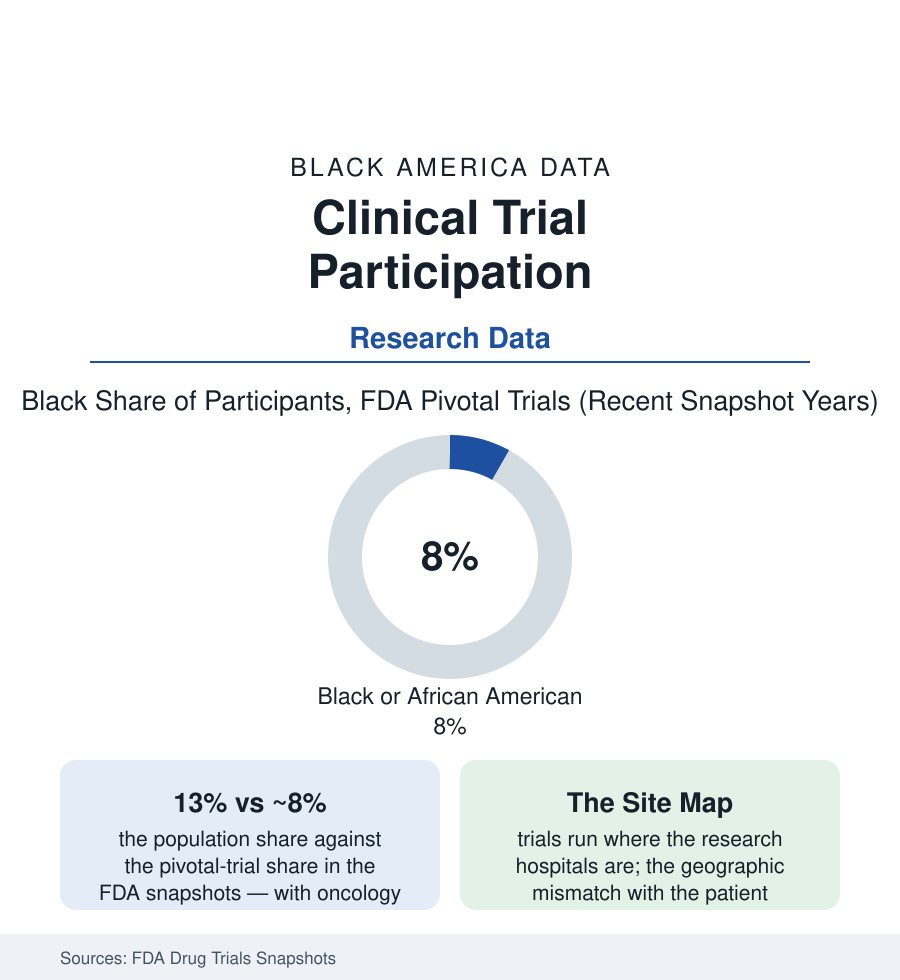

Black Public Health
Clinical Trial Participation: The Evidence Base's Missing Thirteenth
Black Americans are 13% of the country and a single-digit share of the trial participants whose data set the doses and labels. The FDA snapshot data.

Every dosage on every label in this section's medicine cabinet was set in a clinical trial — and the trial population, in the FDA's own Drug Trials Snapshots, runs about eight percent Black in recent snapshot years against thirteen percent of the country, with oncology and several other fields lower. The consequences are not abstract: drugs behave measurably differently across the ancestry-correlated variables the earlier articles keep pricing (the kidney equations' correction, the MS therapies' late arrival, the lung thresholds) — and the evidence base that would catch those differences early is the one the enrollment data describe. This article reads the participation file.
The Numbers Across the Fields
The snapshots and the registry analyses converge on the pattern: overall pivotal-trial participation in the high single digits, disease by disease diverging from the burden in the telling direction — trials for conditions that strike Black patients hardest (heart failure, where the Black share of the disease runs near a fifth of cases and the landmark trials enrolled in the five-to-eight percent range across the era's analyses; multiple myeloma; hypertension itself) enrolling fractions that would not power a subgroup readout, while a few fields stand as the proving exceptions (the sickle-cell trials enrolling appropriately by design; the HIV prevention and treatment networks' community-site model holding Black enrollment shares the rest of medicine studies). The demographic-data quality is its own finding: the trials' race-and-ethnicity reporting incomplete for a meaningful share of participants in the registry audits — the measurement of the gap itself gapped, the FDA's recent reporting rules the current repair attempt. The global shift compounds the domestic one (the trials' migration to Eastern Europe, Latin America, and Asia in the site data — the US Black population's share of a global denominator diluted further, the snapshots' 'Black' counts drawing increasingly on non-US sites' different populations).
The Causes, As Measured
The research on the gap divides it with unusual clarity: the invitation layer first (the studies auditing actual practice find eligible Black patients less often approached — the offer gap again, the specialist-referral and site-staff patterns of the screening file in research form); the site layer (the trials concentrated at academic centers whose catchments and referral bases under-represent the patients the FQHC and community systems treat — the site-feasibility arithmetic that prices a trial's diversity before it opens); the eligibility layer (the criteria — kidney-function cutoffs computed by the old corrected equations, comorbidity exclusions, prior-treatment rules — screening out Black patients at measurably higher rates in the criteria-audit studies, the FDA and ASCO-Friends modernization guidance the filed response); the logistics layer (the visit schedules priced in workdays, transport, and childcare — the participation costs the newer decentralized-trial designs and compensation standards attack); and the trust layer, real in the survey data and routinely over-credited in the professional conversation — the willingness studies finding Black respondents as willing as white respondents when actually invited, the gap living upstream of the asking. The Tuskegee study's invocation as the whole explanation fails the data's test; the invitation logs pass it.
The Fixes Being Graded
The current era's instruments are named in the record: the FDA's diversity-action-plan requirement for pivotal trials (statute of 2022, its guidance contested in the current administrative record — the file's live front), the sponsors' enrollment caps and site-diversity scoring (the large manufacturers' published frameworks), the community-site networks (the HIV model generalized — trials embedded in the clinics the patients already attend, the accrual data showing the design working where funded), the HBCU medical schools' trial-unit building (Meharry, Morehouse, Howard, and Charles Drew standing up research infrastructure in the populations' own institutions), and the decentralized trial's toolkit (home nursing, telehealth visits, shipped medication — the pandemic era's forced experiment, its equity grading still being written in the retention data). The yardstick for all of it is arithmetic and public: the snapshots publish the shares; the disease-burden tables publish the need; the decade will show whether the lines converge.
Reading the Participation Data
Eight percent of the evidence for thirteen percent of the country, with the invitation — not the willingness — as the measured bottleneck: the participation file is the research system's version of this atlas's recurring sentence. The drugs will be taken by everyone. The only question the enrollment tables answer is whose bodies got to teach the labels what they say.
More in Black Public Health
Hypertension Among Black Adults: Prevalence, Control, and Consequences
About 55 percent of Black adults have hypertension — the highest rate of any U.S. group. Prevalence, onset, control, and the stroke, heart, and kidney consequences in the data.
Diabetes Among Black Adults: Prevalence and Complications
Nearly one in five Black adults has diabetes, diagnosed or undiagnosed — and its complications fall with particular weight. The CDC data on prevalence, control, and outcomes.
Black Life Expectancy: The Gap at Birth and Its Causes
Black life expectancy at birth is about 73 years, roughly five years below the national figure — the summary measure of every health gap in this section. The CDC data.
Source: U.S. Food and Drug Administration Drug Trials Snapshots; National Institutes of Health; ClinicalTrials.gov analyses; National Academies of Sciences, Engineering, and Medicine reports.